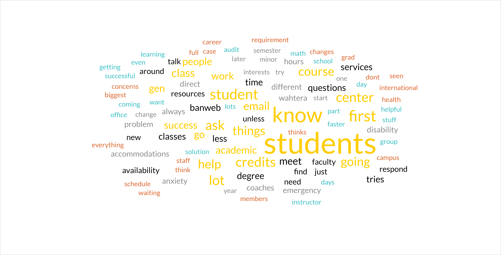

Home
Home
 Interviews
Interviews
 Survey
Survey
 Banweb
Banweb
 Sources
Sources
Interviews
We conducted interviews with staff from various student services across campus to gauge their experiences assisting students facing academic struggles. The objective was to better understand the barriers to academic success students face at Michigan Tech, as well as learn the recourses available to address these challenges. We interviewed academic advisors, Student Disability Services, and the Student Success Center, as they work closely with students to promote academic achievement.
They each offered valuable insight into student struggles and the tailored recommendations offered based their on individual circumstances. We were informed of different campus resources designed to support students over obstacles that negatively impact their academic performance.
The interview questions were designed to gather comprehensive insight into how these resources are utilized, the nature of student struggles they’re presented, strategies used to better understand their students, and potential solutions that could help them through their situation. We also asked about their caseloads and response time to inquire how well students utilize the resources offered. Lastly, to better understand potential obstacles to academic success, we asked about the types of questions students ask and the struggles they report to staff.
These interview questions led us to conclusions about different Michigan Tech student struggles, as well as recourses available to address them. We found that academic difficulties often stem from a combination of heightened academic anxiety and hesitancy to ask for help. While student services staff attempt to redirect students toward campus resources they noted that students oftentimes do not utilize the resources offered and in return struggle with their academic confidence. They proposed that students who face challenges shouldn’t navigate them alone, but take advantage of services provided by the university.
These responses are very useful to determine how to better help the students. However, one of the problems is that students, especially first-generation, are not aware of what resources are offered by the university. First-generation students who came from less well funded schools may not have the tacit knowlegdge that there are programs to help them. Therefore, advertising these programs and making them more widely known would go a long way to helping students.
Interview Questions
-
How many students are you responsible for?
- Academic Advisor 1: Roughly 600 students, but not all of them come to see me. The amount of students that come see me changes, but seniors are less likely to come unless they are worried about graduating.
- Academic Advisor 2: Around 250 students (150 for majors, and 80-100 for minors)
- Student Disability Services: Close to 30-35 students.
- Student Sucess Center: Caseload per staff member (there are 3) around 50-100 -- but they are there to help any student
-
How do you think you tailor your advice to meet the needs of different students?
- Academic Advisor 1: I direct students to career services if they have concerns about their future careers. If a student is having issues with study skills, I direct them to the Wahtera Center.
- Academic Advisor 2: I have a conversation with the students to learn more about them. This can include learning things such as their interests, and the number of credits they came in with.
- Student Disability Services: I have been exposed to a lot of students with different issues, so I am able to read new students well. I'll keep my eye out for different triggers and I'll listen to them to find out their needs. I am able to help them well after learning their personalities.
- Student Sucess Center: I ask a lot of questions regarding academic and personal life to get to know the person and get the full picture of what is going on.
-
What types of questions do most students ask you?
- Academic Advisor 1: Students typically ask what classes they should take. Some also question if they are in the right degree, and I'll help them narrow down their options.
- Academic Advisor 2: How many credits should I be taking? - Do you think I can handle the course schedule I currently have?
- Student Disability Services: Lots of students ask, "What do I need to do to get accommodations here?", "How do my accommodations work?", "Do I have to meet with you all the time?", "What should I do if my instructors do not allow me to use my accommodations?".
- Student Sucess Center: Questions like: "I don't know this...", "I don't know where this..", "I don't know how to..."
-
How often do students come to you with questions about how Banweb works?
- Academic Advisor 1: Students don't ask me questions about banweb very often. Banweb is definitely not very impressive and is likely on its way out.
- Academic Advisor 2: This question often gets asked when students are within their first three semesters. Most of it comes from students having insecurities and needing confidence.
- Student Disability Services: Students don't ask me about Banweb.
- Student Sucess Center: Yes, people ask about BanWeb, MatLab, and most of the technologies used on campus. To help with this oftentimes we offer student success coaches.
-
How do you ask that students get a hold of you, and how quickly do you aim to respond to student communications?
- Academic Advisor 1: I ask students to either email me or schedule a meeting. I try to respond the same day unless it's during mid-scheduling time. If it is an emergency and a student needs to come see me, I'll try my best to squeeze them in as soon as possible.
- Academic Advisor 2: I try to respond within the same day, the response should take no later than a couple of days unless I am absent. Generally, I ask that students email me, and I can send them to my advising calendar where they can book an appointment. The link can be found in my signature attached to my email as well as on the MTU website.
- Student Disability Services: Generally, if a student wants to meet with me, I ask them to email Student Disability Services. The email is actively monitored and we aim to respond within 24 hours.
- Student Sucess Center: Phone, email, coming in, however. I am very flexible. If it is not an emergency I try to get back within 3-5 business days. If it is an emergency, 24 hours.
-
What are some of the biggest challenges to academic success you have seen your students face, and what resources do you suggest they use to overcome these challenges?
- Academic Advisor 1: The biggest problem I've seen is that students don't ask for help when they need it. Once a student asks for help, I'll point them to where they should go. A lot of students lack organization, and I'll point them to the Wahtera Center. I suggest that students also attend their classes so they face fewer academic challenges.
- Academic Advisor 2: 1. Students themselves (time management, too much pride and not asking for help) 2. Overcommitment (taking too many credits, taking part in too many organizations) 3. Losing motivation 4. New students -- solutions (going to class regularly, get to know the professors, talk to RA, find a good group of students, learning centers).
- Student Disability Services: The biggest challenges I have seen have been academic anxiety. I recommend counseling services to overcome it.
- Student Sucess Center: One of the biggest challenges is that students wait too long to ask for help. There is a lot of "I thought I could do it and now I can't." Even if something is a small problem students should still just come in instead of waiting.
-
How do you help students adapt when there are sudden changes in course availability or program structure?
- Academic Advisor 1: We can always find a solution to course availability. Typically, I'll help by adding different courses that meet requirements or I'll squeeze students into full courses.
- Academic Advisor 2: The degree audit should not change for you. If a course is not offered then there is going to be a substitution. Talk to people and get ahead of the gossip train.
- Student Disability Services: Changes in academic program structure often trigger academic anxiety for students, so I try to meet with them as much as possible to help calm the situation.
- Student Sucess Center: We work closely with academic advisors. Helping students get in touch with who is most likely going to be able to help them. It calms a lot of academic anxiety to have some help.
-
Are there any specific resources or services for supporting academic success that you suggest for students in unique situations, such as international students, non-traditional students, or students with financial challenges?
- Academic Advisor 1: I direct most students with unique challenges to the Wahtera Center, since they have lots of helpful tools.
- Academic Advisor 2: There are a lot of resources - success coaches, learning centers, center for diversity and inclusion, mental health and wellbeing, student ambassadors, undergrad student government, etc.
- Student Disability Services: Generally, there are resources in the Administration Building that can help with most unique situations. I'll suggest that students meet with success coaches in the Wahtera Center. I'll also walk students to different services that they need, such as financial aid services or counseling services.
- Student Sucess Center: It depends on the student, but it is important to figure out what the top concern is and start with that (it is not always academics). There are some nontraditional student groups on campus that can be helpful too.